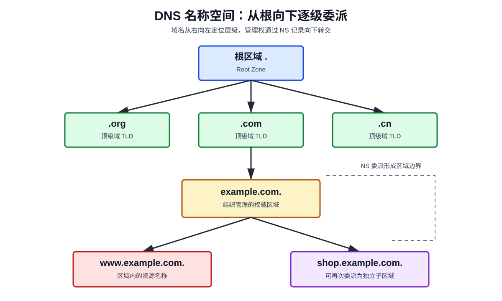
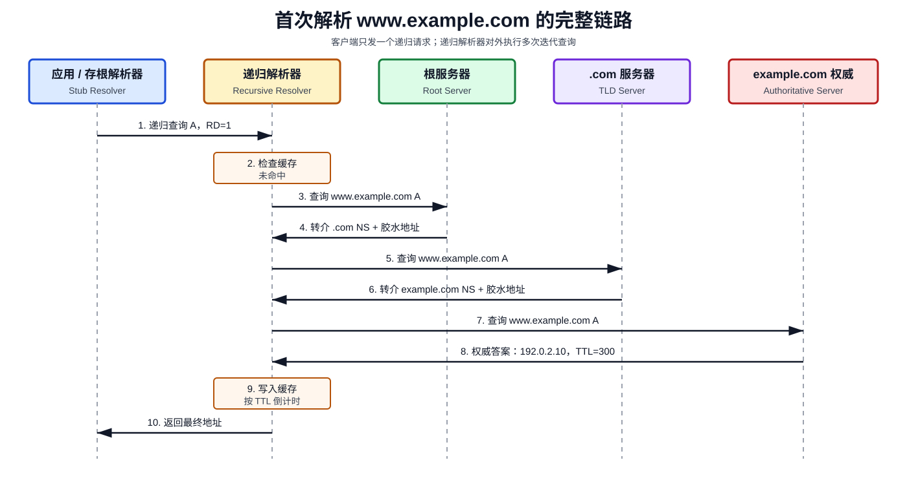
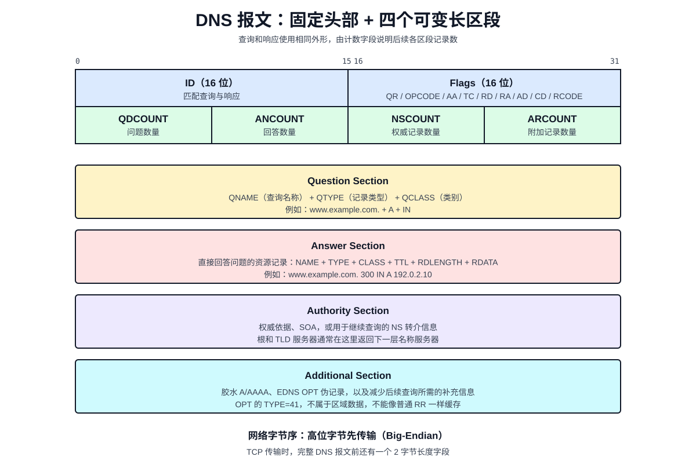
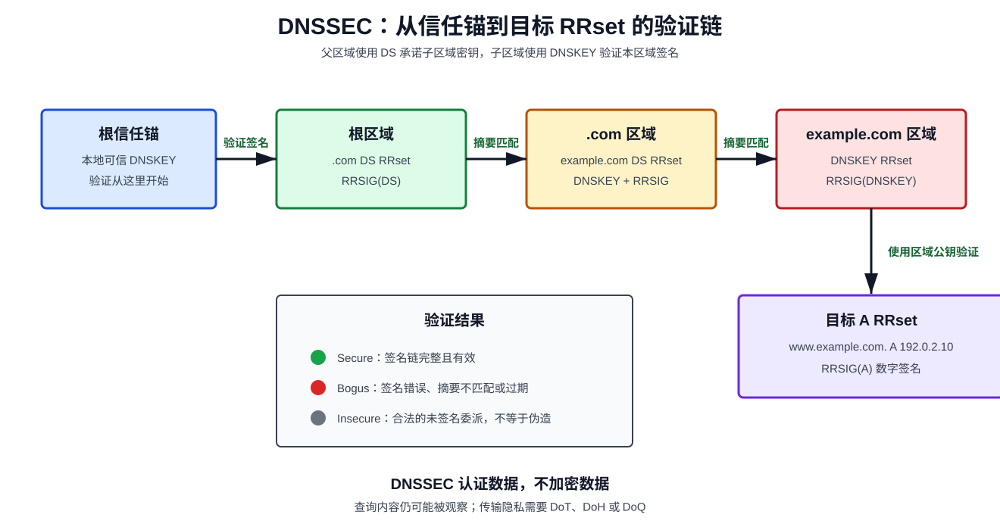

DNS：从域名到 IP 地址的分布式解析系统
DNS（Domain Name System，域名系统）不是一张简单的“域名与 IP 对照表”，而是一套分层命名、分布式授权、按需查询、允许缓存的全球基础设施。
1. 为什么需要 DNS
互联网通信最终依赖 IP 地址。例如，浏览器必须知道服务器的 IPv4 或 IPv6 地址，才能建立 TCP 或 QUIC 连接。
但 IP 地址不适合作为长期的人类标识：
- 难以记忆：
2001:db8::8a2e:370:7334不如www.example.com直观。 - 容易变化：迁移机房、切换 CDN 或扩缩容都可能改变 IP。
- 一对多：一个域名可以对应多个地址，实现容灾和负载均衡。
- 多种资源：邮件服务器、公钥、服务发现信息也需要统一查询。
DNS 在“稳定名称”和“可变化资源”之间增加了一层间接映射：
用户记住域名 → DNS 查询资源位置 → 应用使用返回结果建立连接
DNS 的本质是一个分布式、层次化、最终一致、支持缓存的键值数据库。键由域名、记录类型和类别组成，值是资源记录集合。
2. DNS 的设计由来
早期 ARPANET 使用中心化的 HOSTS.TXT 文件保存主机名与地址。每台主机定期从网络信息中心下载完整文件。
随着主机数量增长，这种方式遇到三个问题：
- 完整文件越来越大，分发成本快速增长。
- 更新依赖中心机构，组织无法独立管理名称。
- 同名冲突、版本过期和单点故障越来越严重。
1983 年，Paul Mockapetris 提出了 DNS；1987 年发布的 RFC 1034 和 RFC 1035 奠定了现代 DNS 的核心。
它用四个关键设计解决了中心化文件的问题：
| 设计 | 解决的问题 |
|---|---|
| 层次化命名 | 避免全球名称冲突 |
| 分区授权 | 每个组织管理自己的区域 |
| 分布式存储 | 避免单点和全量数据库 |
| TTL 缓存 | 减少延迟和权威服务器压力 |
3. 域名空间：一棵倒置的树
DNS 名称空间是一棵以根节点为起点的树。域名书写顺序从最具体的标签到最一般的标签，解析和授权则从右向左进行。

以 www.shop.example.com. 为例：
| 层级 | 名称 | 作用 |
|---|---|---|
| 根 | . |
整棵 DNS 树的起点 |
| 顶级域 | com. |
管理 .com 下一级委派 |
| 二级域 | example.com. |
通常由组织注册并管理 |
| 子域 | shop.example.com. |
可继续委派给独立团队 |
| 主机标签 | www |
标识具体资源名称 |
末尾的点表示根节点，因此 www.example.com. 是完全限定域名（Fully Qualified Domain Name，FQDN）。日常书写通常省略最后的点。
3.1 标签与长度限制
域名在网络中不是以带点字符串传输，而是编码为一串标签：
www.example.com.
↓
3 "www" 7 "example" 3 "com" 0
每个标签最长 63 个八位字节。包括标签长度字节和结尾根标签在内，一个完整域名的线格式最长 255 个八位字节。
DNS 名称比较通常不区分 ASCII 字母大小写，但实现应尽量保留收到的大小写形式。
3.2 域（Domain）、区域（Zone）与委派（Delegation）
域是名称树中的一个节点及其全部后代，是逻辑概念。
区域是由某组权威服务器实际负责的数据范围，是管理概念。区域不一定包含域的全部后代，因为子域可以被委派出去。
例如，example.com 区域可以保存 www.example.com，但将 shop.example.com 委派给另一组服务器。此时父区域只保留指向子区域的 NS 记录及必要的胶水记录。
3.3 胶水记录为什么存在
假设 shop.example.com 的权威服务器是 ns.shop.example.com。要查询它的 IP，似乎必须先查询 shop.example.com，形成循环依赖。
父区域会附带该名称服务器的 A 或 AAAA 记录，这类用于打破委派循环的地址记录称为胶水记录（Glue Record）。
胶水记录是父区域提供的导航信息，并不等同于子区域自身给出的权威数据。
4. DNS 系统中的角色
一次看似简单的域名解析，通常涉及多个角色：
| 角色 | 英文 | 职责 |
|---|---|---|
| 应用程序 | Application | 发起名称解析需求 |
| 存根解析器 | Stub Resolver | 操作系统中的轻量客户端 |
| 递归解析器 | Recursive Resolver | 代替客户端完成完整查询并缓存结果 |
| 根名称服务器 | Root Name Server | 指向对应顶级域服务器 |
| 顶级域服务器 | TLD Name Server | 指向目标域的权威服务器 |
| 权威名称服务器 | Authoritative Name Server | 返回区域内最终权威数据 |
4.1 存根解析器
浏览器通常不会自己遍历根、顶级域和权威服务器。它调用操作系统的 getaddrinfo() 等接口，由存根解析器把请求交给已配置的递归解析器。
递归解析器可能来自家庭路由器、运营商、公司网络，或公共 DNS 服务。
4.2 递归解析器
递归解析器承担最重的工作：
- 检查缓存。
- 从根服务器开始追踪委派。
- 处理 CNAME 链。
- 按 TTL 缓存正向或否定结果。
- 可选地验证 DNSSEC 签名。
- 把最终答案返回给客户端。
4.3 权威名称服务器
权威服务器负责一个或多个区域。它直接从区域数据中回答问题，通常不替普通客户端递归查询其他区域。
响应头中的 AA（Authoritative Answer）标志表示答案来自当前服务器具有权威的数据。
5. 一次 DNS 查询到底发生了什么
下面以首次查询 www.example.com 的 A 记录为例。假设本地和递归解析器都没有缓存。

5.1 应用到存根解析器
浏览器先检查自身缓存，然后可能检查操作系统缓存和 hosts 文件。仍未命中时，它通过系统解析接口请求地址。
操作系统存根解析器向配置的递归解析器发送请求，并通常设置 RD=1，表示希望对方提供递归服务。
5.2 递归解析器查询根服务器
递归解析器从根提示文件（Root Hints）知道根服务器地址。它询问根服务器：
www.example.com. 的 A 记录是什么？
根服务器通常不返回最终地址，而是返回 .com 顶级域的 NS 记录及可用的胶水地址。这称为转介响应。
5.3 查询顶级域服务器
递归解析器选择一个 .com 服务器继续询问。顶级域服务器返回 example.com 的权威 NS 记录及必要的胶水地址。
5.4 查询权威服务器
递归解析器向 example.com 的权威服务器询问。权威服务器返回目标 A 记录，或者返回 CNAME，再由解析器继续追踪规范名称。
5.5 缓存并返回客户端
递归解析器缓存沿途得到的 NS、A、AAAA、CNAME 等记录，然后把最终答案返回存根解析器。
后续相同查询若命中缓存，就不必再次遍历整条委派链。
6. 递归查询与迭代查询
这两个概念描述的是“收到请求的一方要负责到什么程度”。
6.1 递归查询（Recursive Query）
客户端要求服务器返回最终答案或明确错误。服务器不能只说“你再去问别人”。
存根解析器到递归解析器通常使用这种语义。请求头中 RD=1 表示希望递归；响应中的 RA=1 表示服务器支持递归。
6.2 迭代查询（Iterative Query）
服务器返回自己掌握的最佳信息。若没有最终答案，就返回更接近目标的名称服务器。
递归解析器访问根、顶级域和权威服务器时，通常采用迭代查询。
“递归解析器”是一个服务角色，“递归查询”是一种请求语义。递归解析器在外侧接受递归请求，在内侧通常执行一系列迭代查询。
7. 资源记录：DNS 存储的实际数据
DNS 不是只查询 IP。它存储的是资源记录（Resource Record，RR）。
一条记录的逻辑结构如下：
NAME TTL CLASS TYPE RDATA
例如：
www.example.com. 300 IN A 192.0.2.10
字段含义：
| 字段 | 含义 |
|---|---|
| NAME | 记录所属的域名 |
| TTL | 可缓存秒数 |
| CLASS | 网络类别，互联网通常为 IN |
| TYPE | 记录类型 |
| RDATA | 与类型相关的数据 |
7.1 常见记录类型
| 类型 | 全称 | 作用 |
|---|---|---|
| A | Address | 域名映射到 IPv4 地址 |
| AAAA | IPv6 Address | 域名映射到 IPv6 地址 |
| CNAME | Canonical Name | 别名指向规范名称 |
| NS | Name Server | 指定区域的权威服务器 |
| MX | Mail Exchange | 指定邮件服务器及优先级 |
| TXT | Text | 保存验证、策略等文本信息 |
| SOA | Start of Authority | 描述区域主控信息和序列号 |
| PTR | Pointer | 反向解析，地址映射到名称 |
| SRV | Service | 描述服务主机、端口、权重与优先级 |
| CAA | Certification Authority Authorization | 限制可签发证书的 CA |
| HTTPS | HTTPS Service Binding | 提供 HTTPS 服务端点和连接参数 |
7.2 RRset：缓存和签名的基本单位
同一个 NAME + CLASS + TYPE 下的全部记录构成资源记录集（Resource Record Set，RRset）。
例如，一个域名有三个 A 记录，这三个地址共同组成一个 A RRset。DNSSEC 对 RRset 签名，缓存也应以 RRset 为基本单位处理。
7.3 CNAME 的底层语义
CNAME 表示“当前名称是另一个名称的别名”，并不直接保存 IP。
www.example.com. 300 IN CNAME edge.cdn.example.net.
edge.cdn.example.net. 60 IN A 192.0.2.20
解析器必须继续查询目标名称。由于同一名称的 CNAME 会把整个名称重定向，它通常不能再与 A、MX 等其他普通记录共存。
7.4 SOA 与区域同步
SOA 记录包含主名称服务器、管理员邮箱、序列号和定时参数。
辅助权威服务器会检查序列号（Serial）。发现主服务器版本更新后，可通过 AXFR 全量传送或 IXFR 增量传送同步区域。
8. DNS 报文的底层结构
DNS 查询和响应使用同一种总体报文格式。固定头部为 12 字节，后面跟四个可变长区段。

8.1 12 字节头部
| 字段 | 位数 | 含义 |
|---|---|---|
| ID | 16 | 标识一次事务，用于匹配响应 |
| QR | 1 | 0 为查询，1 为响应 |
| OPCODE | 4 | 操作类型，普通查询为 0 |
| AA | 1 | 是否为权威回答 |
| TC | 1 | 报文是否被截断 |
| RD | 1 | 是否期望递归 |
| RA | 1 | 服务器是否支持递归 |
| Z/AD/CD | 3 | 保留位及 DNSSEC 相关标志 |
| RCODE | 4 | 响应码 |
| QDCOUNT | 16 | Question 数量 |
| ANCOUNT | 16 | Answer 记录数量 |
| NSCOUNT | 16 | Authority 记录数量 |
| ARCOUNT | 16 | Additional 记录数量 |
常见响应码：
| RCODE | 名称 | 含义 |
|---|---|---|
| 0 | NOERROR | 查询处理成功，答案也可能为空 |
| 1 | FORMERR | 报文格式错误 |
| 2 | SERVFAIL | 服务器无法完成解析 |
| 3 | NXDOMAIN | 查询的域名不存在 |
| 5 | REFUSED | 服务器拒绝执行 |
NOERROR 但没有目标类型答案称为 NODATA。它与“名称本身不存在”的 NXDOMAIN 不同。
8.2 四个区段
- Question：包含 QNAME、QTYPE 和 QCLASS。
- Answer：直接回答问题的资源记录。
- Authority：权威信息或下一跳 NS。
- Additional：补充地址、EDNS OPT 伪记录等。
8.3 名称压缩
域名在一个响应中经常重复。DNS 使用压缩指针引用报文中已出现的名称后缀，避免重复发送。
压缩指针前两位为 11，其余 14 位表示目标偏移量。例如 Answer 中的名称可以直接指回 Question 中的 QNAME。
解析器必须防御指针循环、越界和过深跳转，否则恶意报文可能导致死循环或内存错误。
9. DNS 为什么同时使用 UDP 和 TCP
传统 DNS 服务默认使用 53 端口。多数普通查询使用 UDP，因为它无需建立连接、开销小、延迟低。
但“DNS 只使用 UDP”是错误说法。RFC 7766 要求通用 DNS 实现同时支持 UDP 和 TCP。
9.1 何时使用 TCP
- UDP 响应被截断，响应头
TC=1，客户端改用 TCP 重试。 - AXFR/IXFR 区域传送。
- 实现主动选择 TCP。
- 响应较大，或网络策略要求可靠传输。
TCP 中每个 DNS 报文前增加一个 2 字节长度字段。现代实现应复用连接，并允许流水线发送多个查询，减少握手成本。
9.2 EDNS(0)
原始 DNS 把 UDP 报文限制为 512 字节。IPv6、多地址和 DNSSEC 签名使响应越来越大。
EDNS(0) 通过 Additional 区段中的 OPT 伪记录扩展 DNS。客户端可声明自己能接收的 UDP 负载大小，并携带额外标志和选项。
OPT 记录类型值是 41，它不是区域数据，不应被缓存。
更大的 UDP 报文可能发生 IP 分片，而分片容易被防火墙丢弃。因此工程上应谨慎设置 EDNS 缓冲区，并保留 TCP 回退能力。
9.3 DoT、DoH 与 DoQ
传统 UDP/TCP DNS 通常是明文的，路径上的设备可以观察或篡改查询。
| 协议 | 传输 | 常用端口 | 特点 |
|---|---|---|---|
| DNS over TLS（DoT） | DNS over TLS/TCP | 853 | 专用端口，传输加密 |
| DNS over HTTPS（DoH） | DNS over HTTPS | 443 | 映射为 HTTP 请求，易穿越网络边界 |
| DNS over QUIC（DoQ） | DNS over QUIC | 853 | 加密、多路复用，减少队头阻塞 |
这些协议主要保护客户端到递归解析器的传输通道。它们不自动证明 DNS 数据由域名所有者签发，数据来源认证仍依赖 DNSSEC。
10. 缓存：DNS 高性能的核心
如果每次查询都访问根服务器，DNS 无法承受全球流量。缓存让解析器复用已有答案。
10.1 TTL 如何工作
TTL（Time to Live）由数据发布者设置，表示记录最多可缓存多少秒。
假设 A 记录 TTL 为 300 秒，递归解析器收到 300 后开始倒计时。100 秒后返回给下一个客户端时，剩余 TTL 应接近 200。
TTL 到期不代表数据一定变化，只代表缓存不能继续相信旧副本，必须重新查询。
10.2 TTL 的工程权衡
| TTL 设置 | 优点 | 代价 |
|---|---|---|
| 较长 | 命中率高、延迟低、权威压力小 | 变更传播慢 |
| 较短 | 切流和故障迁移更快 | 查询量与成本增加 |
计划切换地址时，可以提前一个旧 TTL 周期降低 TTL；确认缓存已普遍过期后再切换，最后恢复正常值。
10.3 否定缓存
NXDOMAIN 和 NODATA 也可以缓存，称为否定缓存（Negative Caching）。它能阻止无效请求持续冲击权威服务器。
否定缓存时长由区域 SOA 相关字段约束。排障时不能只清理正向 A 记录缓存，也要考虑失败结果仍在缓存。
10.4 多层缓存与“修改后仍未生效”
缓存可能存在于：
- 浏览器或应用。
- 操作系统。
- 本地代理、路由器或容器运行时。
- 企业或运营商递归解析器。
- 上游转发器。
因此，“权威记录已经更新”不等于“所有客户端立即看到新值”。DNS 更接近由 TTL 控制的最终一致系统。
11. DNS 如何支撑负载均衡与 CDN
11.1 多地址轮询
一个名称可以返回多个 A 或 AAAA 记录。客户端通常按系统策略选择地址。
这种方式简单，但 DNS 本身不知道后端连接是否成功，也不能保证客户端平均分配。
11.2 GeoDNS 与智能解析
权威平台可根据递归解析器来源、EDNS Client Subnet、网络运营商或健康状态返回不同答案。
它能把用户引向更近的节点，但会增加缓存碎片、隐私风险和调度复杂度。
11.3 CDN 中的 CNAME 链
站点常把业务域名 CNAME 到 CDN 域名。CDN 再根据自身调度系统返回边缘节点地址。
DNS 决定的是“尝试连接哪个入口”，真正的 HTTP 路由、TLS 终止和内容缓存仍发生在 CDN 节点。
12. DNS 安全问题
12.1 缓存投毒
攻击者伪造响应，让递归解析器缓存错误地址。传统 UDP 缺少连接状态，若事务 ID 和源端口可预测，攻击更容易成功。
常见缓解措施包括：
- 随机化事务 ID 和源端口。
- 严格匹配问题名称、类型和来源。
- 只接受与未完成查询相关的响应。
- 启用 DNSSEC 验证。
12.2 DNS 劫持与污染
路径上的设备可以拦截请求、伪造答案或阻断真实响应。
DoT、DoH 和 DoQ 能保护客户端到递归解析器的传输；DNSSEC 能让验证解析器识别被修改的签名数据。两者解决的问题不同，通常需要组合使用。
12.3 反射与放大攻击
攻击者伪造受害者源 IP，向开放递归器发送小请求，诱导服务器把较大响应发给受害者。
防护措施包括关闭不必要的开放递归、响应速率限制、网络入口源地址验证，以及避免产生异常大的 UDP 响应。
12.4 随机子域攻击
攻击者持续查询大量随机且不存在的子域。由于每个名称不同，递归缓存难以命中，查询会穿透到权威服务器。
可以使用响应速率限制、Anycast 扩容、异常检测，以及 RFC 8198 定义的激进式 DNSSEC 否定缓存等措施。
13. DNSSEC 的底层信任链
DNSSEC（DNS Security Extensions）为 RRset 提供来源认证和完整性校验，但不加密查询内容。

核心记录：
| 类型 | 作用 |
|---|---|
| DNSKEY | 发布区域公钥 |
| RRSIG | 保存 RRset 的数字签名 |
| DS | 父区域保存的子区域公钥摘要 |
| NSEC/NSEC3 | 可验证地证明名称或记录类型不存在 |
验证过程以解析器预置的根信任锚为起点：
- 使用根 DNSKEY 验证根区域签名。
- 验证根区域中的
.comDS。 - 用 DS 匹配
.com的 DNSKEY，并验证其签名。 - 继续验证
example.com的 DS 与 DNSKEY。 - 用
example.comDNSKEY 验证目标 A RRset 的 RRSIG。
若任一签名无效、摘要不匹配或签名过期，验证解析器通常返回 SERVFAIL，而不是把可疑数据交给应用。
DNSSEC 不提供机密性，不隐藏访问的域名，也不保证目标服务器本身安全。
14. 浏览器访问网站时，DNS 处于哪一步
一个典型 HTTPS 访问链路如下：
解析 URL
→ 查询 DNS，得到候选 IP 和服务参数
→ 选择地址
→ 建立 TCP + TLS，或直接建立 QUIC
→ 校验证书与域名
→ 发送 HTTP 请求
DNS 只负责发现连接目标及相关参数。TLS 证书继续证明应用服务器身份，HTTP 才负责请求具体资源。
现代浏览器还可能使用 HTTPS 记录获得 HTTP/3 支持、备用端口和地址提示，从而减少连接探测延迟。
15. 实战：使用 dig 观察解析过程
15.1 查询常见记录
dig example.com A
dig example.com AAAA
dig example.com MX
dig example.com NS
dig example.com SOA
重点观察：
status：NOERROR、NXDOMAIN 或 SERVFAIL。flags：qr、rd、ra、aa、ad等。ANSWER SECTION：最终答案。AUTHORITY SECTION：权威或转介信息。ADDITIONAL SECTION：胶水地址、OPT 等。Query time：本次查询耗时。SERVER：实际响应的解析器。
15.2 指定服务器
dig @1.1.1.1 example.com A
dig @8.8.8.8 example.com A
dig @ns.example.com example.com A +norecurse
前两条用于比较不同递归解析器，第三条直接询问权威服务器并关闭递归请求。
15.3 追踪委派链
dig +trace example.com A
+trace 让 dig 自己从根开始执行迭代查询，可以观察根、顶级域和权威服务器的转介过程。
15.4 强制 TCP 与检查 DNSSEC
dig +tcp example.com A
dig +dnssec example.com A
dig +dnssec example.com A | grep -E 'RRSIG|flags'
+dnssec 请求服务器返回 DNSSEC 数据，但是否完成验证仍取决于解析器。响应中的 ad 标志表示上游验证解析器认为数据已通过认证。
15.5 反向解析
dig -x 192.0.2.10
IPv4 地址会被转换为 in-addr.arpa 下的 PTR 查询；IPv6 使用 ip6.arpa，并按十六进制半字节逆序展开。
16. DNS 故障排查方法
不要只执行一次 ping 就判断 DNS。建议按层次缩小范围。
16.1 第一步：确认本机配置
cat /etc/resolv.conf
scutil --dns # macOS
resolvectl status # 使用 systemd-resolved 的 Linux
确认系统实际使用的解析器、搜索域和接口配置。注意某些系统中的 /etc/resolv.conf 只是生成文件，不代表完整状态。
16.2 第二步：区分本地、递归与权威问题
dig example.com A
dig @1.1.1.1 example.com A
dig @权威服务器 example.com A +norecurse
判断方法：
| 现象 | 可能原因 |
|---|---|
| 默认解析失败，公共解析器成功 | 本地或网络递归器故障 |
| 多个递归器都失败，权威查询成功 | 委派、DNSSEC 或缓存问题 |
| 权威服务器返回错误 | 区域配置或权威服务问题 |
| 不同递归器答案不同 | TTL、分线路由或缓存尚未收敛 |
16.3 第三步：检查委派
分别比较父区域返回的 NS 与子区域 SOA/NS。常见错误包括：
- 注册商处 NS 与实际权威服务器不一致。
- 胶水地址过期。
- 新旧权威服务器区域版本不同。
- 某台权威服务器不可达。
- UDP 53 可达但 TCP 53 被防火墙阻断。
16.4 第四步：检查 DNSSEC
若普通结果看似存在但验证解析器返回 SERVFAIL，应检查：
- 父区域 DS 是否与子区域 DNSKEY 匹配。
- RRSIG 是否过期或尚未生效。
- 服务器时间是否正确。
- 密钥轮换是否按顺序完成。
可使用：
dig +dnssec example.com DNSKEY
dig +dnssec example.com DS
delv example.com A
16.5 第五步：检查网络和报文大小
小响应成功、大响应失败，通常与 EDNS、IP 分片、MTU 或 TCP 53 被阻断有关。
dig example.com A +noedns
dig example.com DNSKEY +dnssec
dig example.com DNSKEY +dnssec +tcp
若仅 +tcp 成功，应继续检查防火墙、负载均衡器和中间设备。
17. 常见误区
误区一：DNS 就是域名转 IP
DNS 是通用命名与资源发现系统。A/AAAA 只是记录类型的一部分。
误区二：一个域名只能对应一个 IP
一个 A 或 AAAA RRset 可以包含多个地址，答案还可能因位置、时间和网络策略不同。
误区三：修改记录后应立即全球生效
旧数据会在多层缓存中持续到剩余 TTL 到期。不同解析器的刷新时刻也不同。
误区四：DNS 默认优先读取 hosts 文件
名称服务顺序由操作系统配置决定。许多系统会先查本地文件，但这不是 DNS 协议本身规定的行为。
误区五：DoH 等于 DNSSEC
DoH 保护查询通道；DNSSEC 验证数据来源与完整性。一个解决“路上能否被看见或修改”，另一个解决“答案是否由授权方签名”。
误区六：DNS 只使用 UDP
完整 DNS 实现必须支持 UDP 和 TCP。大响应、区域传送和加密 DNS 都可能使用可靠或面向连接的传输。
18. 中英文术语对照
| 中文名称 | English | 说明 |
|---|---|---|
| 域名系统 | Domain Name System, DNS | 分布式命名与资源查询系统 |
| 完全限定域名 | Fully Qualified Domain Name, FQDN | 从当前节点到根的完整名称 |
| 资源记录 | Resource Record, RR | DNS 中的一条数据 |
| 资源记录集 | Resource Record Set, RRset | 同名、同类、同类型记录集合 |
| 存根解析器 | Stub Resolver | 客户端侧轻量解析组件 |
| 递归解析器 | Recursive Resolver | 代替客户端完成查询的服务器 |
| 权威名称服务器 | Authoritative Name Server | 对某区域拥有权威数据的服务器 |
| 顶级域 | Top-Level Domain, TLD | 根下的第一层域 |
| 区域 | Zone | 一组权威服务器管理的数据范围 |
| 区域切割 | Zone Cut | 父区域向子区域委派的边界 |
| 委派 | Delegation | 把子区域管理权交给另一组 NS |
| 胶水记录 | Glue Record | 父区域为名称服务器附带的地址 |
| 生存时间 | Time to Live, TTL | 缓存可使用数据的最长时间 |
| 否定缓存 | Negative Caching | 缓存不存在或无数据的结果 |
| 扩展 DNS | Extension Mechanisms for DNS, EDNS | 扩展报文容量、标志与选项 |
| 域名系统安全扩展 | DNS Security Extensions, DNSSEC | DNS 数据签名与验证机制 |
| 信任锚 | Trust Anchor | DNSSEC 验证链的可信起点 |
| 域名系统经 TLS | DNS over TLS, DoT | 使用 TLS 保护 DNS 传输 |
| 域名系统经 HTTPS | DNS over HTTPS, DoH | 把 DNS 映射到 HTTPS 交换 |
| 域名系统经 QUIC | DNS over QUIC, DoQ | 使用 QUIC 传输加密 DNS |
19. 总结
理解 DNS，关键不是记住“域名换 IP”，而是建立以下模型：
- DNS 名称空间是一棵从根向下委派的树。
- 区域把管理责任分散给不同组织和权威服务器。
- 存根解析器把递归任务交给递归解析器。
- 递归解析器通过多次迭代查询找到权威答案。
- 资源记录是数据载体，RRset 是缓存和签名的基本单位。
- TTL 用时效换取性能，因此 DNS 天生具有缓存和最终一致特征。
- UDP、TCP、EDNS 共同承担传统传输；DoT、DoH、DoQ 补充传输隐私。
- DNSSEC 建立从根信任锚到目标记录的数据认证链。
20. 参考资料
- RFC 1034: Domain Names - Concepts and Facilities
- RFC 1035: Domain Names - Implementation and Specification
- RFC 2308: Negative Caching of DNS Queries
- RFC 4033: DNS Security Introduction and Requirements
- RFC 6891: Extension Mechanisms for DNS
- RFC 7766: DNS Transport over TCP
- RFC 7858: DNS over TLS
- RFC 8484: DNS Queries over HTTPS
- RFC 9250: DNS over Dedicated QUIC Connections